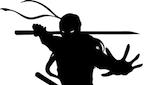
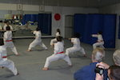

Kid's Class: Takes place every Tuesday/Thursday evening from 5:30 pm - 6:30 pm. Children under the age of 13 are placed in this class. Often, black belt or senior students will assist in the class so that, numbers permitting, each student recieves individualized attention.
Adult's Class: Takes place every Tuesday/Thursday evening from 6:30 pm - 7:30 pm. Individuals over the age of 12 are placed in this class. This class is more rigorous, with minimal break time.
Private Lessons: At $60 an hour, a student can take part in a private lesson. These classes are comprised solely of the student and the head instructor. However, in order to lower the financial burden, the student may opt to share the class with another student to reduce the cost of the lesson for each student to $30. Private lessons are a great opportunity to work on specific rank requirements, tournament preparation, Ninja Wars skills, and more.
Ninja Wars

What: Ninja Wars is an exciting awarness and teamwork based exercise and game. Students are placed onto teams and will battle each other using rolled up socks, in a dodgeball like fashion. There are several games that are played, including: Battlefield, Capture the Flag, Treasure, Sitting Duck, and Freeze Blast, as well as many more.
Where/When: Ninja Wars takes place at our regular dojo, with one caveat. Various gymnastics mats are used to create a "battlefield" with obstacles and points of cover. Ninja Wars takes place (typically) on the last Friday of every month from 6:00 pm - 8:00 pm.
Why: This event helps foster situational awareness and teamwork, which is imperative in a largely independent sport, which Karate is. The skills used and learned in Ninja Wars can be applied to many aspects of life, including sparring in karate. The event also heavily promotes understanding the Code of Bushido (the Way of the Warrior), which is a creed by which a martial artist should conduct his/her self.
Rank Exams

This event typically takes place every 3-6 months, largely depending on when a number of students are ready to advance in rank. Colored belt exams are held at our regular dojo, while Black belt exams are held at varying locations.
Rank exams are not a "promotion" event. That is, students invited to the rank exam should not expect to be awarded their next rank. Rather, the event is an opportunity for the student to present all of the material that they have learned to the testing planel in an attempt to demonstrate that they have mastered their current material and are ready to advance in rank.
After a rank exam, all testers, the testing panel, and spectators are invited to eat dinner together and enjoy the evening of one of our larger events.